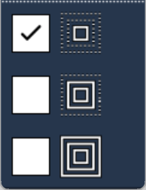
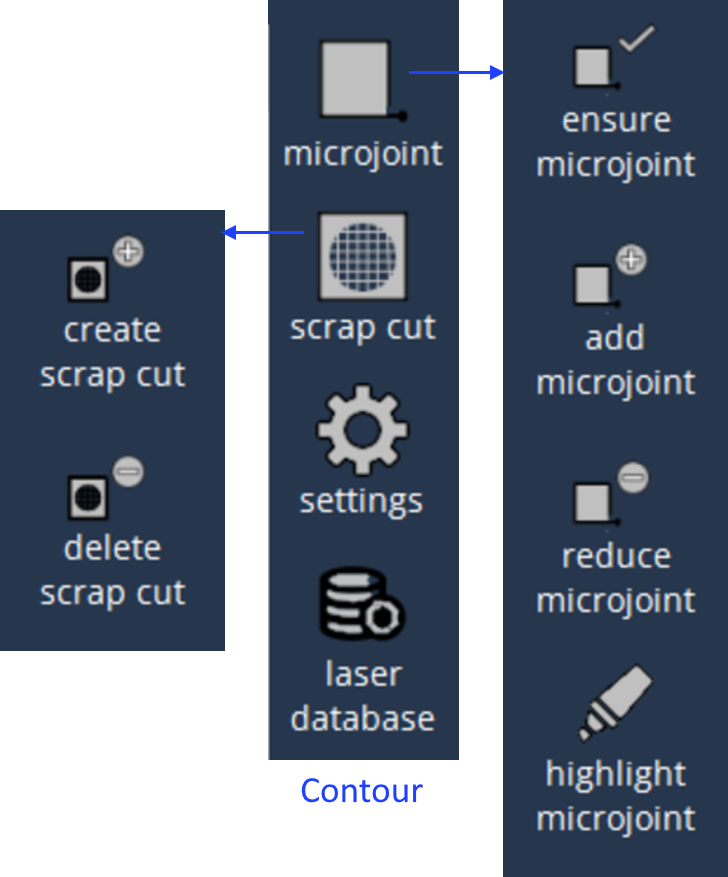
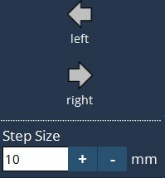
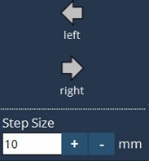

Modifica layout
Abbiamo il formato FXLYT di Flux che supporta inVulcan Control. Il vantaggio dell’uso dei file FXLYT è legato al fatto che sono malleabili e l’operatore può fare molto di più con questi file rispetto ai file DIN temprati.
L’utente deve selezionare un file di layout e quindi premere Modifica per passare alla pagina Modifica layout. Sono disponibili cinque opzioni, come indicato di seguito:
-
Pezzo
-
Contorno
-
Attrezzaggio
-
Grigliato residuo
-
Sequenza
Pezzo



Aggiungi: l’utente può aggiungere pezzi DXF nel layout.
Sposta: il pezzo selezionato nel layout può essere spostato utilizzando questa opzione.
-
Sposta a sinistra: il pezzo si sposta a sinistra.
-
Sposta a destra : il pezzo si sposta a destra.
-
Sposta in alto: il pezzo si sposta verso l’alto.
-
Sposta in basso: il pezzo si sposta verso il basso.
L’entità del movimento del pezzo dipende dalla dimensione della fase selezionata.

Ruota: il pezzo selezionato nel layout può essere ruotato utilizzando questa opzione.
-
Ruota di 90 gradi a destra: il pezzo ruota di 90 gradi in senso orario.
-
Ruota di 90 gradi a sinistra: il pezzo ruota di 90 gradi in senso antiorario.
-
Ruota a destra: il pezzo ruota in senso orario.
-
Ruota a sinistra: il pezzo ruota in senso antiorario.
L’entità della rotazione del pezzo dipende dalla dimensione della fase selezionata.
Dimensione della fase: si basa sul valore dato per Piccolo, Medio e Grande per movimento e rotazione; il pezzo viene spostato e ruotato di conseguenza. L’utente può modificare il valore in base alle preferenze.

Commuta: l’utente può selezionare un pezzo qualsiasi e fare clic sull’opzione di commutazione per selezionare tutti gli altri pezzi rimanenti. La selezione di più pezzi può essere effettuata facendo clic sul pezzo corrispondente. La deselezione può essere effettuata cliccando sui pezzi selezionati. Quindi possono essere spostati, ruotati o cancellati insieme.

Cancella: l’utente può cancellare il pezzo come indicato dalla selezione. Fare clic su SÌ nella finestra popup per procedere alla cancellazione.

Nuovo nesting: l’utente può utilizzare l’opzione di nuovo nesting per effettuare il nesting di tutti i pezzi nel layout.
Impostazioni del pezzo: l’utente può utilizzare questa opzione per modificare il formato lamiera, il margine della lamiera, la direzione di laminazione e la misura dell’interspazio dei pezzi.

Database laser: l’utente può utilizzare questa opzione per modificare la pagina dei dati laser che contiene materiale, spessore, diametro ugello, tipo di gas, trattamento e pellicola.

Contorno
In questa pagina, l’utente può selezionare i contorni e quindi utilizzare queste opzioni per modificarli.

-
Microgiunzione: l’utente deve selezionare il contorno prima di selezionare una delle opzioni riportate di seguito:
-
Assicura microgiunzione: se un contorno selezionato ha già una o più microgiunzioni, non fare nulla, altrimenti inserire una microgiunzione.
-
Aggiungi microgiunzione: questa opzione aggiunge più microgiunzioni al contorno selezionato.
-
Riduci microgiunzione: questa opzione riduce la microgiunzione per il contorno selezionato.
-
Evidenzia microgiunzione: questa opzione mette in evidenza le microgiunzioni nel layout.
-
-
Taglio degli sfridi: l’utente deve selezionare il contorno interno per eseguire le seguenti opzioni:
-
Crea taglio degli sfridi: questa opzione viene utilizzata per creare un taglio degli sfridi.
-
Elimina taglio degli sfridi: questa opzione elimina il taglio degli sfridi selezionato.
-
-
Impostazioni del contorno: questa opzione viene utilizzata per modificare la larghezza della microgiunzione, le dimensioni della griglia del taglio degli sfridi e la lunghezza di accostamento del taglio degli sfridi.
Attrezzaggio
Utilizzando questa opzione, l’utente può spostare l’accostamento nel punto di destinazione e può modificare i parametri di attrezzaggio selezionando il contorno.
-
Sposta accostamento: questa opzione viene utilizzata per spostare l’accostamento selezionando il punto di accostamento e spostandosi nel nuovo punto di destinazione.

-
Taglio laser: selezionando l’attrezzaggio si apre la finestra di dialogo. L’utente può effettuare modifiche all’attrezzaggio laser.

-
L’utente può eseguire la "specchiatura" della direzione del taglio da senso orario ad antiorario o viceversa.
-
Scegliere il tipo di incisione preliminare in base alle esigenze.
-
Scegliere le condizioni di taglio in base alle esigenze.
-
Modificare i parametri di accostamento Lunghezza, Raggio e Angolo in base alle esigenze.
-
Abilitare/disabilitare la microgiunzione e modificarne la larghezza in base alle esigenze.
Grigliato residuo
In questa pagina, l’utente può spostare e cancellare la linea di tranciatura una volta che il taglio della lamiera è abilitato in Impostazioni.
 

-
Sposta linea di tranciatura: l’utente deve abilitare l’opzione di creazione del taglio della lamiera per creare la linea di tranciatura. Deve quindi selezionare la linea di tranciatura da spostare a sinistra o a destra secondo il distanza indicata nella dimensione della fase.
-
Elimina linea di tranciatura: l’utente deve selezionare la linea di tranciatura e quindi cancellarla utilizzando l’opzione di cancellazione della linea di tranciatura.
-
Impostazioni del grigliato residuo: image::image37.jpg[Skeleton settings dialog,400]
-
Crea taglio della lamiera: se il grigliato residuo deve essere tagliato o meno.
-
Spaziatura X e Y: è la spaziatura tra le linee di tranciatura verticali e orizzontali rispettivamente.
-
Crea lamiera residua: abilita o disabilita la lamiera residua per creare o eliminare rispettivamente il taglio residuo.
-
Larghezza minima lamiera residua: anche se viene verificato quanto sopra, un taglio finale sarà aggiunto solo quando la larghezza della lamiera inutilizzata creata dal taglio sarà maggiore o uguale a questo valore.
-
Offset taglio finale X: è la distanza dall’estremità più a destra dell’attrezzaggio pezzo al taglio verticale finale che crea la lamiera residua.
-
Esegui linee di tranciatura dopo tutti i pezzi: attivandolo, prima verranno tagliati i pezzi e poi la lamiera. I seguenti parametri influenzano il modo in cui ogni singolo taglio di tranciatura viene programmato:
-
Misura dell’interspazio microgiunzione sul bordo della lamiera: impostare questo valore su un valore maggiore di zero se si vuole lasciare un piccolo ponticello nei punti in cui il taglio di tranciatura tocca il bordo della lamiera.
-
Misura dell’interspazio microgiunzione sul bordo del pezzo: impostare questo valore su un valore maggiore di zero se si vuole lasciare un piccolo ponticello nei punti in cui il taglio di tranciatura tocca il bordo del pezzo.
-
Distanza di incisione dal bordo del pezzo: è la distanza del punto d’incisione preliminare dal bordo del pezzo.
-
Distanza di misura dal bordo della lamiera: questo parametro identifica la distanza prima del bordo della lamiera dove è bloccata l’altezza della testa del laser; la regolazione della distanza è disattivata.
-
Sovracorsa dopo il bordo della lamiera: è la quantità pari alla quale la testa di lavorazione si sposta oltre il bordo della lamiera con il laser acceso; la regolazione della distanza è però disattivata.